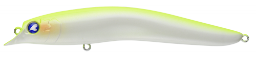
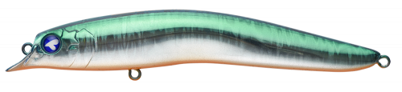
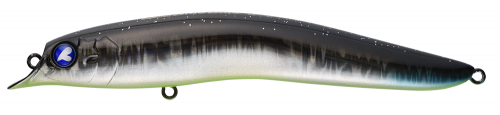
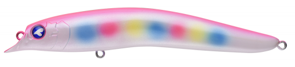

スカーナッシュ120F
（SCARNASH 120F）
スカーナッシュ120FはBlueBlue（ブルーブルー）のリップレスミノーです。
大型タングステン球の重心移動で、120mmクラスでは最高峰の飛距離を出すモデル。これまで140mmクラスでしか届かなかったポイントも攻められます。ファットボディと屈折したテールで強い波動を出し、パイロットルアーとして使えます。

画像出典:BlueBlue公式HP
スペック
- メーカー
- BlueBlue（ブルーブルー）
- タイプ
- リップレスミノー（フローティング）
- 全長
- 120mm
- 自重
- 18g
- レンジ
- 30〜90cm
- フック
- #3×2
- リング
- #3
- ターゲット
- シーバス・ヒラメ
- 価格
- 2,250円（税別）
▼今すぐチェック

スカーナッシュ120Fの特徴
飛距離・強波動・大型フックの3拍子そろったリップレスミノー
-
120mmクラス最高峰の飛距離
ボディ内部の大型タングステン球による重心移動で、同サイズのミノーとしては圧倒的な飛距離。向かい風でも沖のポイントまで届きます。
-
強波動とイレギュラーなフラつき
屈折したテールとファットボディで、力強いロールと強い波動を出します。高速域ではイレギュラーにフラつくアクションが出て、魚に口を使わせます。
-
2フックで大型魚も安心
120mmのリップレスミノーとしては珍しい2フック仕様。3フックより大きなフックを付けられるので、大型魚とのやり取りも安心です。
スカーナッシュ120Fの使い方
基本はただ巻き。ゆっくり巻けばレンジ30cm前後、速く巻けばもう少し深いレンジを引けます。
広い範囲を探るパイロットルアーとして、まずは遠投してただ巻きで反応を探りましょう。速巻きで出るフラつきアクションも誘いになります。フックサイズを変えると、浮力をシンキング〜サスペンド〜フローティングに調整できます。
スカーナッシュ120Fの得意な状況
サーフのヒラメやシーバス、河口や干潟など遠投が必要な場所。向かい風が強い日や、140mmクラスでは大きすぎるけれど飛距離は欲しいときに向いています。
ワンポイント
さらに飛距離と存在感が欲しいときは、同じシリーズの140Fに持ち替えましょう。
スカーナッシュシリーズの使い分け
| モデル | 全長／自重 | 得意な場面 |
|---|---|---|
| スカーナッシュ120F | 120mm／18g | レンジ30〜90cm。飛距離とサイズのバランス型（本記事のモデル） |
| スカーナッシュ140F | 140mm／25g | レンジ60〜100cm。さらに飛距離と存在感が欲しいとき、大型ベイトに |
どちらもタングステンの重心移動でよく飛ぶリップレスミノー。ベイトの大きさと必要な飛距離で選びましょう。
人気カラー
公式ラインナップから4色を紹介します（カラー名は公式の表記のまま）。

#03 チャートバックパールチャートの背中とパールのお腹。濁りやローライトで見やすいカラー。

#04 SGOBlueBlueの人気カラー。日中や濁り気味のときのアピールに。

#05 エスカルド個性的なカラー。定番色に反応がないときのローテーションに。

#06 ピンクキャンディピンク系のアピールカラー。朝夕のマズメや常夜灯まわりに。
画像出典:BlueBlue公式HP
スカーナッシュ120Fに似ているルアー
-
 カゲロウ124F
メガバス
詳細はこちら＞
カゲロウ124F
メガバス
詳細はこちら＞
全長124mm・自重22gのシャローランナー。同じサイズ感で、もっと浅い0〜20cmを引きたいときに。
-
 ハーデス127F
バスデイ
詳細はこちら＞
ハーデス127F
バスデイ
詳細はこちら＞
全長127mm・自重25.3gのリップレスシャローミノー。同じクラスで、もっと重さと飛距離が欲しいときに。
-
 アイザー125F
ブルーブルー
詳細はこちら＞
アイザー125F
ブルーブルー
詳細はこちら＞
全長125mm・自重22gのシャローランナー。同じBlueBlueで、もっと浅いレンジを引きたいときに。